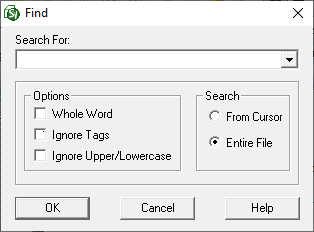

This command can also be executed from the SI Editor's Toolbar, Right-click menu, or by using the keyboard shortcut Ctrl+F.
The Find command allows you to search for words or phrases from the current cursor position or throughout the entire Section.

Enter a custom search term or select one from the drop-down list based on a previous search.
The Whole Word search looks for exact word matches, ignoring partial or plural words (e.g., 'tile' won't find 'tiles').
The Ignore Upper/Lowercase option finds all instances of the word or phrase, regardless of capitalization. This is particularly useful when you're unsure of the exact capitalization of a word or phrase, or when trying to find all variations of a word.
The Confirm Changes option is used to individually review and approve each suggested change, ensuring only the desired edits are made.
The option to search From Cursor will search from the cursor location to the end of the file.
The option to search the Entire File will search the file from the beginning to the end.
 The OK button will execute and save the selections made.
The OK button will execute and save the selections made.
 The Cancel button will close the window without recording any selections or changes entered.
The Cancel button will close the window without recording any selections or changes entered.
 The Help button will open the Help Topic for this window.
The Help button will open the Help Topic for this window.
 To find the next instance, press the F3 key.
To find the next instance, press the F3 key.
Users are encouraged to visit the SpecsIntact Website's Support & Help Center for access to all of our User Tools, including Web-Based Help (containing Troubleshooting, Frequently Asked Questions (FAQs), Technical Notes, and Known Problems), eLearning Modules (video tutorials), and printable Guides.
| CONTACT US: | ||
| 256.895.5505 | ||
| SpecsIntact@usace.army.mil | ||
| SpecsIntact.wbdg.org | ||